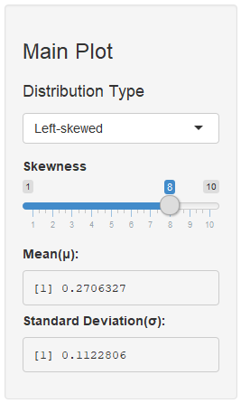
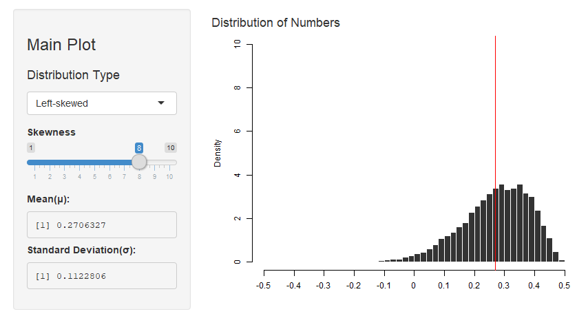
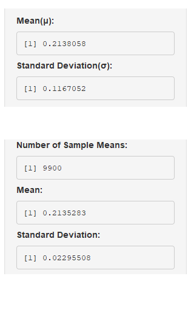

Central Limit Theorem is a key concept in the frequentist probability theory: Even if the original distribution is not normally distributed, the distribution of its sample means tends toward a normal distribution. The idea itself is very simple, but it is somewhat hard to grasp for statistics learners only with written words and formulas.
My web-application, Central Limit Theorem Visualisation shows how central limit theorem works by rendering how plots change as the number of sample means increases. And, it is SUPER EASY.
- Choose a distribution
- Adjust shapes
- Click buttons to add sample means
- PROFIT!!
Central Limit Theorem Visualisation
(Use Arrow Keys to Flip Pages)
Junyoung Kim
September 9, 2018
Introduction
How It Works
- Here is the overall layout of the app.

How It Works: Main Plot
- You can see the Main Plot panel on the top left.

- Choose a Distribution Type to create a pool of numbers.
- Move slider to adjust skewness.
- Below "Skewness" slider...
- The panel shows the mean(mu) and standard deviation(sigma).
How It Works: Main Plot
- Main Plot panel and the plot created using input values.

How It Works: Sample Mean Plot
- You can also see the Sample Mean Plot panel on the bottom left.

- Move slider to adjust the size of each sample(N) out of your pool.
- Click 5 / 100 Button to put additional sample means to the plot.
- Click more and see how the sample mean plot changes.
- The plot approximates normal as the number increases.
How It Works: Sample Mean Plot
- Sample Mean Plot panel and the plot created using input values.

How It Works: Comparing Results
- Compare means and standard deviations of two plots.

- With the number of sample means large enough(ex = 9900),
- the mean of your sample means becomes closer to the μ.
- and their standard deviation approximates sigma/sqrt(N),
- 0.1167 / sqrt(25) = 0.02334 .... very close to 0.02295
- The reality works just as the formula says!
Links
You can also see the source codes on my github repository.